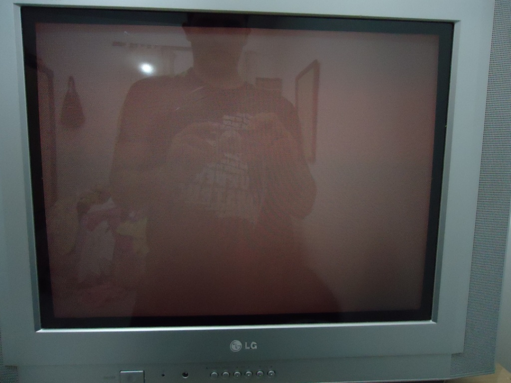

Mega Drive - Mega 3 morto, não inicia o jogo
 :::. Por Gigacom
- O maior pesadelo de todo dono de video game antigo, é um dia ligar o bichinho na tomada e o console não funcionar mais. Há várias coisas que podem provocar isso, porém uma delas nem sempre se nota, passa batido, e o console acaba sendo vendido num leilão do tipo "no estado". Esse ia acabar sendo o destino desse MD3... ia ser...
:::. Por Gigacom
- O maior pesadelo de todo dono de video game antigo, é um dia ligar o bichinho na tomada e o console não funcionar mais. Há várias coisas que podem provocar isso, porém uma delas nem sempre se nota, passa batido, e o console acaba sendo vendido num leilão do tipo "no estado". Esse ia acabar sendo o destino desse MD3... ia ser...
_________________________________________________________________________________
Olha aé o sujeito. Esse é um Mega Drive 3, das primeiras versões lançadas pela Tec Toy. Fonte interna, compatibilidade com tudo quanto é tipo de acessorio, inclusive com o Sega CD. É o tipo de Mega Drive que dura décadas, aguenta todo tipo de tranco e mal cuidado. Mas esse curiosamente não estava funcionando direito ...
...
Ganhei esse console de um amigo. Ele já havia dado uma boa olhada nele, e não descobriu problema algum. A placa mãe estava limpa, o sistema que fornece energia ao console estava ok, não havia qualquer componente estourado ou com sinais de avaria. Enfim, estava tudo perfeito, até chegava a ligar, dava sinal de video, mas não exibia jogo algum .
.
Levei o console para casa, abri, e confirmei o que meu amigo já havia dito. Aparentemente não havia nada de errado. Então, lá fui eu enfiar o nariz na placa do MD para olhar com todo cuidado do mundo os contatos e trilhas da placa mãe e... Eureka! Achei o defeito !!! Haviam 3 trilhas que saiam do processador mas que estavam corroídas. Isso é bem comum de acontecer, em tudo quanto é tipo de video game. Maresia, humidade, sujeira ou simplesmente o tempo são os tipos de coisa que provocam isso em tudo quanto é aparelho eletrônico.
!!! Haviam 3 trilhas que saiam do processador mas que estavam corroídas. Isso é bem comum de acontecer, em tudo quanto é tipo de video game. Maresia, humidade, sujeira ou simplesmente o tempo são os tipos de coisa que provocam isso em tudo quanto é aparelho eletrônico.
O único jeito de arrumar esse tipo de problema é ressoldando ou reconectando os pontos rompidos dessas trilhas. Nesse caso em particular, decidi não restaurar essas trilhas com solda, pois elas estavam muito proximas uma da outra e seria um trabalho hérculeo fazer isso sem deixar solda unindo duas ou mais trilhas... então, aproveitei o fato de haver uns buraquinhos ali naquelas trilhas para justamente colocar alguns fios que ligariam o processador à esses pontos.
Uma dica nesse tipo de caso, é que se deve colocar um pouco de solda nos fios que serão soldados. Há vários termos para esse tipo de coisa, sendo que o mais conhecido por aqui onde moro é "estanhar". Portanto, estanhar seria a preparação dos fios que serão soldados. É simples, você descasca uma pontinha do fio expondo o seu interior, e passa um pouquinho de solda em cima dessa ponta. Isso ajuda imensamente na hora de soldar o fio em locais pequenos ou muito sensiveis, como as perninhas de processadores, memórias ou CIs mais fragéis. Na verdade, depois de se estanhar o fio, não se utiliza mais a solda, apenas aquele pouquinho que fica na ponta do fio é o suficiente para fazer uma boa soldagem, sem sobras ou exagero.
Então, peguei 3 fiozinhos, estanhei as pontas, soldei nas perninhas do processador e conectei-os em cada um dos buraquinhos correspondentes ali do lado.
Eeeerrr ... parece meio feio, mas é que a foto não pegou o melhor ângulo hehehe
... parece meio feio, mas é que a foto não pegou o melhor ângulo hehehe . Enfim, o importante nesses casos é que o treco funcione. Liguei tudo, coloquei os cabos, cartucho no console, me preparei pra tirar uma bela foto do jogo e...
. Enfim, o importante nesses casos é que o treco funcione. Liguei tudo, coloquei os cabos, cartucho no console, me preparei pra tirar uma bela foto do jogo e...

Droga ! Não apareceu nada na tela (a não ser o reflexo da bagunça ali em cima da cama
! Não apareceu nada na tela (a não ser o reflexo da bagunça ali em cima da cama ... resultado da pressa em tirar as roupas do varal antes que a chuva molhasse tudo de novo
... resultado da pressa em tirar as roupas do varal antes que a chuva molhasse tudo de novo ).
).
Enfim, lembrei de uma coisinha básica mas pouco conhecida. Sabe aquele tom meio esverdeado que toda placa da maior parte dos circuitos possui? Pois é, aquilo ali é um tipo de verniz que é aplicado sobre a placa para proteger as trilhas do acumulo de sujeira e de intepéries. O problema é que esse verniz não é 100% eficiente... as vezes ele falha, como foi nesse caso... o verniz tambem impede que uma solda grude em qualquer coisa ali. Tanto é que quando se precisa soldar alguma trilha dessas para qualquer coisa que seja, é preciso dar uma raspadinha de leve bem em cima da trilha para tirar o verniz e fazer a solda entrar em contato com a trilha. Aqueles buraquinhos onde soldei os fios tambem estavam com um pouco de verniz por dentro. Então, a alternativa mais simples nesse caso foi soldar as perninhas do processador diretamente naquele chip ao lado dele, e que originalmente era ligado ao processador através daquelas trilhas corroídas. Como não há verniz aplicado nos contatos dos CIs, memórias e processadores, não é preciso raspar nadinha neles . Então, desfiz o trabalho anterior e soldei tudo diretamente.
. Então, desfiz o trabalho anterior e soldei tudo diretamente.
Tádán! Fotinha ficou meio desfocada, mas tá valendo. Agora isso tinha que funcionar . Religuei tudo na TV, coloquei o cartuchinho no Mega e...
. Religuei tudo na TV, coloquei o cartuchinho no Mega e...
Dá-lhe Sonic ! Imagem perfeita, som perfeito. Testei depois o MD3 com um Sega CD e funcionou perfeitamente. Problema resolvido
! Imagem perfeita, som perfeito. Testei depois o MD3 com um Sega CD e funcionou perfeitamente. Problema resolvido .
.
Acesse o Trombone e comente sobre essa matéria!


Aqui, vou apresentar a restauração de um controle de SNES que comprei em péssimo estado numa feirinha da minha cidade, e que agora está lindinho funcionando perfeitamente. Confira as dicas, e faça uma restauração você também
Restaurando um controle de PSX
Peguei o mais feinho e judiado dos controles para fazer esse artigo. O coitado estava encardido na parte de cima, e debaixo dele encontrei arranhões nas partes de apoio da mão, e bastante sujeira acumulada nas inscrições. O conector do cabo estava muito arranhado e sujo tambem, o cabo então nem se fala... sujava a mão só de pegar